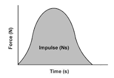

| Term | Definition |
| p = m • v | Formula for momentum |
| ∆p = m • ∆v | Formula for change in momentum |
| F • t | Impulse equation |
| F • t = m • ∆v | Impulse-momentum theorem |
| (m1 • v1) + (m2 • v2) = (m1 • v1) + (m2 • v2) | Elastic collision equation |
| (m1 • v1) + (m2 • v2) = (m1 + m2) • v | Inelastic collision equation |
| F • t = m • ∆v | Impulse-momentum theorem |
| Impulse | A force acting on an object over a time |
| Momentum | The motion of a moving body found by multiplying it's mass and velocity |
| Elastic Collision | Collision where momentum and kinetic energy are both conserved. Usually a collision where the two objects bounce off of each other. |
| Inelastic Collision | Collision where momentum is conserved but not kinetic energy. Usually a collision where the two objects move together (Always in the direction of the object with greater momentum). |
| Explosion | Collision where momentum is conserved, but not kinetic energy and usually one velocity is negative |
Usually the first thing that is needed when solving any collision problem is determining what type of collision it is. If it is an elastic collision then that means that both objects retain seperate masses and speeds. An elastic collision generally uses the following equation: (m1 • v1) + (m2 • v2) = (m1 • v1) + (m2 • v2). If the collision is an inelastic one then the following equation is usually used: (m1 • v1) + (m2 • v2) = (m1 + m2) • v. From there it is as simple as plugging all the variables in and solving.
Graphs in this unit are force vs time graphs which display time in the x-axis and force in the y-axis. The area under the slope is the impulse. Example:
For the lab for the Momentum Unit we were required to design an experiment to determine the momentum of carts before and after an elastic collision, an inelastic collision and an explosion. This meant we needed to measure the speed of the carts by seeing how fast they got to each other and how fast they went afterwards. For the elastic collision we just pushed one cart strong enough onto the other and observed as the one with more momentum pushed through the other. For the inelastic collision we needed to move both carts in a way that they would bounce off of each other and we measured from there. Finally the explosion was the most difficult because it required we put the carts together and put a loaded spring in between them, we then activated the spring which pushed the carts apart (The momentum ended up being zero in the system because they went from being still to moving in opposite directions at the same speed). Overall the conclusion was that little momentum was lost in any collision and the momentum that was lost can be attributed to friction.
Momentum and Impulse have plenty of real life application and most of them are pretty intuitive. Here are some pretty common examples:
•A bowling ball rolled with a greater speed than another with the same weight will have a greater momentum. Alternatively, a bowling ball with a greater weight moving at the same speed will also have a greater momentum.
•Airbags are designed to make collisions longer so that it takes away the force of the momentum. This goes back to the whole concept of Big F Little T (Big Force, Little Time) and Big T Little F (Big Time, Little Force).
•Boxers are told to relax their neck to increase collision time. They are also told to make contact as quick as possible with their punches so the time is less and the force is greater.
•In football it it easier to run people over when they are standing still because their momentum is effectively zero.
1) Two air pucks are moving toward each other across an air table (frictionless surface) and collide in a straight line. Puck 1 is moving to the right with a speed of 6 m/s. Puck 2 is moving to the left with a speed of 10 m/s. They collide and bounce off in a perfectly elastic collision. After the collision puck one is moving to the right with a speed of 2 m/s. Which puck experiences the greater change in momentum?
A)Puck one
B)Puck two
C)They experience the same non-zero change in momentum
D)Neither experience a change in momentum
2) A bicycle has a momentum of 24 kg•m/s. What momentum would the bicycle have if it had twice the mass and was moving at the same speed?
A)48 kg•m/s
B)40 kg•m/s
C)12 kg•m/s
D)24 kg•m/s
3)Jerome plays middle linebacker for Lassiter varsity football. In a game against cross-town rival Walton, he delivered a hit to North's 82-kg running back, changing his eastward velocity of 5.6 m/s into a westward velocity of 2.5 m/s. Determine the initial momentum of the running back?
A)400 kg•m/s
B)480 kg•m/s
C)460 kg•m/s
D)380 kg•m/s
4) Mr. H asks Jerome (102 kg) and Michael (98 kg) to sit on a large 14-kg skate cart. Mr. H asks Suzie (44 kg) to sit on a second 14-kg skate cart. The two carts are placed on low friction boards in the hallway. Jerome pushes off of Suzie's cart. Measurements are made to determine that Suzie's cart acquired a post-impulse speed of 9.6 m/s. Determine the expected recoil speed of Jerome and Michael's cart.
A)2.0 m/s
B)2.6 m/s
C)3.2 m/s
D)4.0 m/s
5) The fastest recorded baseball pitch was delivered by Nolan Ryan in 1974. The pitch was clocked at 100.9 mi/hr (45.0 m/s). Determine the impulse required to give a 0.145-kg baseball such a momentum.
A)4.12 N•s
B)6.52 N•s
C)5.11 N•s
D)12.45 N•s
Free response: Johnny and his twin brother timmy have a combined mass of 200.0kg and are zooming along in a 100.0kg bumper care at 10.0m/s. They bump marias car, which was at rest. Maria has a mass of 25.0kg . after the elastic collision, the twins continue ahead with a speed of 4.12m/s. How fast was marias car bumped across the floor?
Free Response Answer: 14.112m/s
m1= 300kg m2=125kg
v1=10m/s v2=0
vif= 4.12 v2f=?
300(10)+125(0)=300(4.12)+125vf
Created by Wesley DeMontigny, Elder Santis and John Gormanos